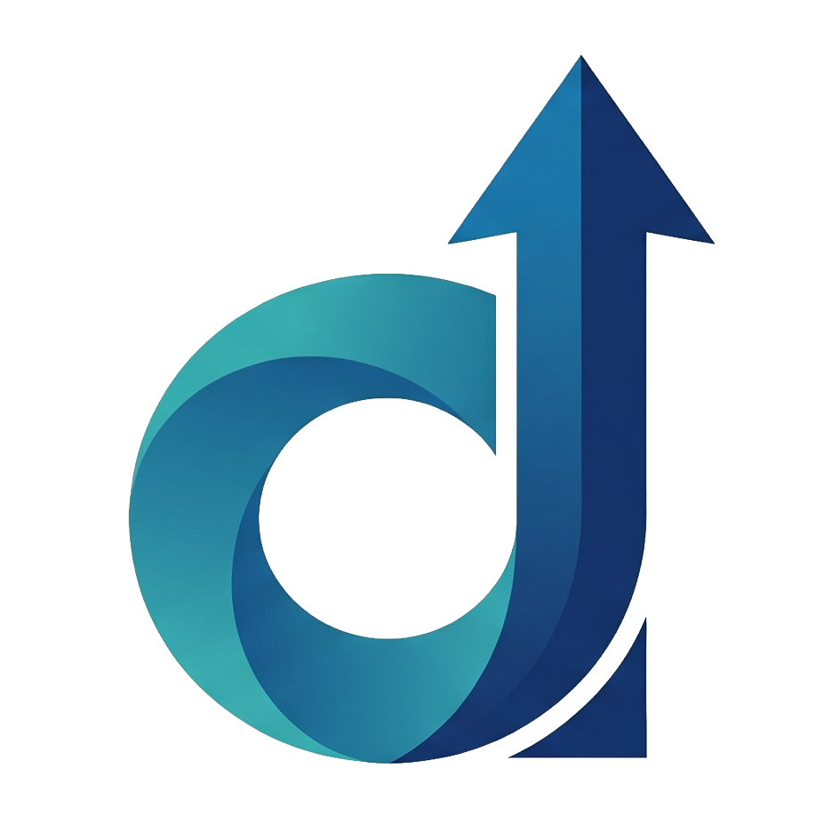
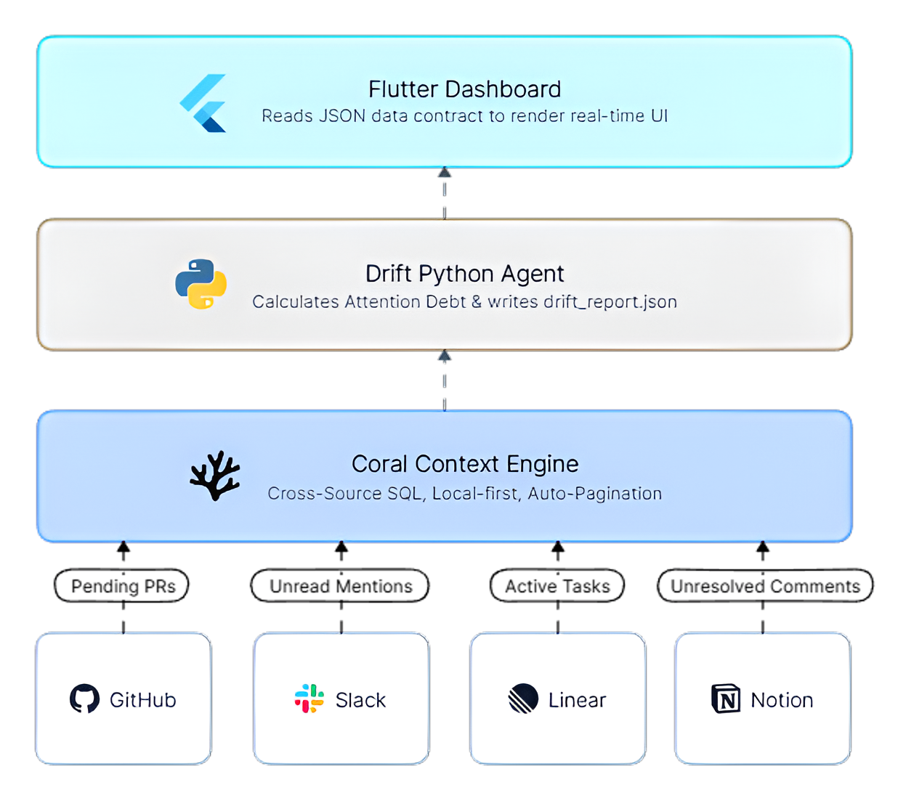

| Data | Coral — Federated SQL via MCP |
| Protocol | MCP over stdio |
| Backend | Python 3.11 + Pydantic v2 |
| AI / LLM | Mistral AI (single-call) |
| Frontend | HTML5 + Tailwind + Vanilla JS |
| Alt UI | Flutter Web (Dart) |
| Scoring | Deterministic weighted engine |
| Data | JSONL + Pydantic models |
Pivoted from complex cross-source SQL JOINs in Coral to Python-side correlation — more robust and debuggable
First time using Model Context Protocol — learned to bridge AI agents with real data sources via stdio
Built backend agent + scoring engine + AI integration + two frontend implementations (Flutter + HTML5) in one hackathon